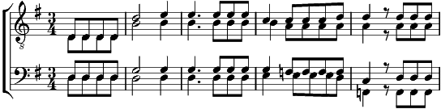

1. Je t'inventerai des rêves
Des planètes et des univers,
Des océans, des blancs déserts,
Des sables fins que vents soulèvent.
Je t'inventerai des rires,
Des vers luisants pour te guider,
Frêles lanternes sur ton sentier,
Petits grelots pour te conduire.
Refrain:
Tu as deux mains sachant pétrir
Et tes deux pieds pour avancer
Tu as deux yeux pour mieux sourire
Et tes deux bras pour embrasser,
Tu as ton âme pour embellir
Ton cœur qui bat pour appeler,
Tu as ton sang pour mieux sentir,
Un bout de vie pour les aimer.
2. [Solo] Je t'inventerai des larmes
Pour enterrer le feu des guerres
Pour apaiser le cri des mères
Pour oublier le jeu des armes.
Je t'inventerai la paix
Pour retrouver le goût du pain
Que l'on partage avec le vin
Au temps d'amour où tout renaît.
Refrain
3. Je t'inventerai le temps
De dessiner les jours qui viennent
De voyager de fleur en graine
De bourlinguer aux quatre vents.
Je t'inventerai la terre
Pour y graver ton pas d'humain
Pour dérouler le long chemin
Qui se rira de leur frontières!
Refrain
Coda:
Je t'inventerai des rêves.